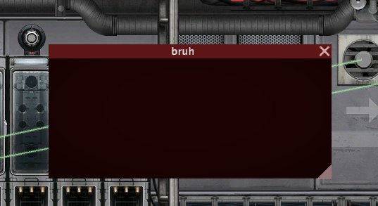

- Generated by
 1.16.0
1.16.0
|
CUI
GUI Framework for Barotrauma
|
There's 2 ways:
2 is minimalistic, but you won't have ide hints
Go to CUI mod folder, take CUI.dll from bin and add a reference to it in your project
Or download https://github.com/SomeRandomNoobKekeke/CrabUI, add luatrauma Refs to it and compile
Or just copy paste source code :BaroDev:
You can take best from both worlds
you can setup https://github.com/Luatrauma/LuaCsModTemplate, and then add ModConfig.xml loading C# sources as "in-memory" scripts
Then you can add project reference to CUI.dll to have ide hints, put it in LocalMods and reload with cl_reloadlua
Mod with this code should open empty frame in sub editor
